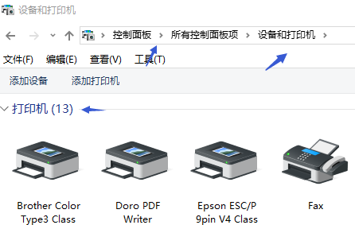

【非常见问题杂笔记】pdf打印，参数无效，ie不显示图片等
1.pdf的访问，是需要登录信息的，控件是单独起的下载请求，这个登录信息如何传递给控件？官网下载中心，下载最新的C-lodop
http://www.c-lodop.com/download.html
安装后在欢迎页面末尾找“PDF打印”链接，或输入地址:
http://localhost:8000/c_pdfprint
目前支持的是欢迎页面的这三种方式，发一下pdf地址，这边测试下。
用浏览器不需要验证能直接访问的pdf地址，
或下载到本地再打印，或转成base64码，目前只支持这三种方式。
只能是url地址或后两种，不支持添加参数。
参考欢迎页面的第三种方式，可以base64码。
2.业务需要打印这种报告，是否写html然后按id打印？
可以，只要传入的是需要的内容和样式就行
http://www.c-lodop.com/demolist/PrintSample2.html
加载css样式，参考样例10 http://www.c-lodop.com/demolist/PrintSample10.html
可以自动分页也可以手动分页。
分页 参考样例30 http://www.c-lodop.com/demolist/PrintSample30.html
超文本超过设置的打印项高度或纸张会自动分页。
超文本输出表格：ADD_PRINT_HTML、ADD_PRINT_HTM、ADD_PRINT_TABLE、ADD_PRINT_TBURL
打印表格带页头页尾 参考样例15 http://www.c-lodop.com/demolist/PrintSample15.html
分页打印综合表格 参考样例43 http://www.c-lodop.com/demolist/PrintSample43.html
超文本表格传入css样式，参考样例10 http://www.c-lodop.com/demolist/PrintSample10.html
纯文本+线输出表格：ADD_PRINT_TEXT、ADD_PRINT_LINE
画线输出表格，参考http://www.c-lodop.com/demolist/PrintSampleA1.html
Lodop是基于本机windows底层引擎进行渲染解析的，与ie调用的引擎一致。
如果是超文本，调用本机底层引擎解析，如果是纯文本，是lodop直接输出的。
如果超文本显示不全，
LODOP.SET_PRINT_STYLEA(0,"HtmWaitMilSecs",1000)//设置上一项延迟超文本下载1000毫秒
批量打印，分页分任务，在页数和任务之间平衡一下，参考样例
26，http://www.c-lodop.com/demolist/PrintSample26.html
下载中心技术手册http://www.c-lodop.com/download.html
官网在线样例http://www.c-lodop.com/LodopDemo.html
3.chrome 上会有这个"网页还没下载完..."。而 firefox上 功能正常
参考http://www.c-lodop.com/faq/pp3.html
http网站还是https的
参考http://www.c-lodop.com/faq/pp3.html
在该chrome上测试样例2，
http://www.c-lodop.com/demolist/PrintSample2.html
参考http://www.c-lodop.com/faq/pp3.html 新版修改了该提示，是同一问题，参考链接里的方法。
如果是页面点击后打印，把获取LODOP对象放在打印按钮里触发。参考样例2
http://www.c-lodop.com/demolist/PrintSample2.html
可以直接测试下样例2，
样例2是否正常。
对照样例2排查写法，
访问http://localhost:8000欢迎页面试试，或测试欢迎页面。
4.报错“Invalid parameter:100% Error:100%....
参数值无效，调试JS，排查参数。
纸张的参数需要用具体值。
纸张设置，参考样例5 http://www.c-lodop.com/demolist/PrintSample5.html
实际打印的时候是有纸张的，根据实际打印时使用的纸张设置纸张大小。
Lodop中的一些优先级定义 http://www.c-lodop.com/blogs/Blog002.html
如果不设置纸张，根据优先级走。
5. ie浏览器显示不出来照
（1）查看lodop内部解析的html信息，见http://www.c-lodop.com/faq/pp8.html
查看一下传入的图片路径是否正确，尽量用绝对路径地址，换个图片试试。
（2）显示空白或者图片缺失等问题，加延迟试试：
LODOP.SET_PRINT_STYLEA(0,"HtmWaitMilSecs",1000)//设置上一项延迟超文本下载1000毫秒
（3）权限问题，图片显示叉号 说明服务端拒绝了 可能证书 session等问题，导致没有直接访问该图片的权限，有些需要验证之后才能访问图片。由于Lodop借用IE下载引擎，与非IE浏览器之间目前不能传递Session(cookies)
（4）清空ie缓存 重置ie 后在ie中查看下。IE中的URL最大长度限制为2048字节。超过这个长度会不支持。
（5） 查看服务器端错误日志排查下 。
（6）做个简单的例子验证下，排除其他因素的干扰。Base64输出图片参考样例38。
在ie里直接访问下这个图片地址试试，重置ie浏览器试试。
是混合部署，还是单独用c-lodop方式，
ie如果是混合部署会走插件方式，edge会走c-lodop方式。
发一下图片地址，这边测试下。
参考http://www.c-lodop.com/faq/pp34.html
用c-lodop4104测试下。
参考http://www.c-lodop.com/faq/pp34.html
可以换成都用c-lodop方式，让IE也走c-lodop。
可以实际测试下试试。
打印内容尽量用组织好的超文本内容。
6.c#下调用，执行了Return = LODOP.PRINT(); 后什么反应都没有呢
是CS架构的，还是BS架构的
换成预览查看下，是否能显示出预览。
ocx是插件生成的，不是c-lodop。
如果是CS架构的用ocx方式，引用安装插件的后的这个ocx就可以了。
7.火狐下用https方式的博文链接给下
参考http://blog.sina.com.cn/s/blog_721e77e50102z33a.html
安装最新版c-lodop的4101及之后版本，并参考链接修改JS地址。
最新版有证书了，新的地址，不用添加例外了
安装新版后，可以访问https://localhost.lodop.net:8443测试下，
如果不提示不安全了，可以不用添加例外。
8.能不能不用clodop, 就安装一下 install_lodop32.exe
参考http://www.c-lodop.com/faq/pp21.html
高版本的火狐谷歌不再支持np插件，需要使用c-lodop，可参考官网样例混合部署http://www.c-lodop.com/LodopDemo.html
Lodop控件升级到C-Lodop云打印 参考http://www.c-lodop.com/faq/pp7.html
进入预览查看下，预览左上角是小打印机图标，说明当前走的是c-lodop。最新版谷歌走的会是c-lodop方式。
是浏览器图标，是lodop插件方式。
9.一个打印没结束，另一个打印可以开始吗
不可以，JS是按照代码执行顺序执行。
如果是指加入队列，打印机前面的任务没打印结束，后面的任务会在排队等待打印。
需要关闭预览。再打印下一个。
参考http://www.c-lodop.com/faq/pp27.html
会提示窗口已打开。
10.图片，为什么打印出来总是显示不完，一页纸都放不下，这个怎么设置
缩放图片，参考http://www.c-lodop.com/faq/pp14.html
缩放图片，或试试整页缩放http://www.c-lodop.com/demolist/PrintSample42.html
缩放图片，参考http://www.c-lodop.com/faq/pp14.html
默认是截取模式，可以用语句，控制可变形或不可变形缩放。
11.每天第一次 使用打印功能的时候会卡住 有这方便的问题解决案例吗
是电脑开机后第一次打印吗，测试官网样例http://www.c-lodop.com/demolist/PrintSample2.html
重启电脑测试下，开机后测试样例，样例是否有提示。
是网页卡住了，还是c-lodop卡住了，或电脑卡住了。
如果样例正常，可能和自己的页面有关，调试JS，做简单例子或和样例对比下试试。排查和页面的哪些地方有关。
12.同样配置的电脑，我们测试有两台电脑打印很慢，文件不大，PRINTA方法，弹出打印设置页面20分钟左右，机器cpu，内存占用都比较小，也比较稳定
直接测试样例4试试，http://www.c-lodop.com/demolist/PrintSample4.html
这边测试样例4的PRINTA速度很快。
如果样例也慢，并试试用最新版c-lodop4014测试下。
13.表格自动分页，如何让图片不分页
1,减小打印项高度，不要紧贴纸张输出。下方留出些空白。
2.用add_print_table测试下，这个分页不切行，如果这个图片在某一行里，这个行分页了，不会切行分页。
14.谷歌84提示https://localhost.lodop.net:8443/不是私密链接
点高级，继续访问试试
点高级，继续访问试试，
访问其他的https网站测试下，查看其他网站https是否是安全的。
https://localhost.lodop.net:8443/
点高级，继续访问，查看地址栏的报错信息
https://localhost.lodop.net:8443/
点高级，展开下方的信息
这个高级，并继续，进入页面后如果还是提示不安全，会有提示不安全的原因。
再访问下这个地址，https://localhost.lodop.net:8443/
这要这个地址能正常访问就行。这个地址页面是否是安全的。
第一次访问有的浏览器可能有问题，点继续后，地址是否是安全的了，是否可以正常访问了。
第一次访问时有的浏览器可能有识别等问题，之后就可以了
如果第一次后以后都正常了，都是安全地址，可以继续使用。
找一台新电脑再测试下，这边测试是正常的。
一般都会识别，直接安装4014第一次访问也可以正常使用。
以管理员权限重启下c-lodop试试，并排查是否是权限问题。
找台新电脑，以管理员权限安装，然后第一次访问这个地址，应该是安全的。
15.win7系统重装后,为啥打印的时候 选择打印成pdf虚拟文件 不能保存pdf文件类型啊?
选择pdf虚拟打印机可以保存成pdf的，群文件里有个pdf虚拟打印机，可以选那个测试下。
这个是pdf虚拟打印机，安装后选择这个pdf虚拟打印机，可输出为pdf文件。
16.表格自动分页，如何让图片不分页
1,减小打印项高度，不要紧贴纸张输出。下方留出些空白。
2.用add_print_table测试下，这个分页不切行，如果这个图片在某一行里，这个行分页了，不会切行分页。
参考http://www.c-lodop.com/demolist/PrintSample15.html
和lodop技术手册。
这个不切行，如果改行在分页位置，后面的会不显示，而不是切行分页。
用 add_print_htm, 切行时调整分页粒度TableRowThickNess，参考 样例30
http://www.c-lodop.com/demolist/PrintSample30.html
分页粒度增大，会整行分到下一页。
用 add_print_htm, 切行时调整分页粒度TableRowThickNess，参考 样例30
http://www.c-lodop.com/demolist/PrintSample30.html
可以设置粒度大一些，找到合适的分页粒度。
再大一些试试，
“TableRowThickNess”的值：整数，分页粒度值，默认是20(px)。所谓分页粒度，是指自动分页时在分页线附近进行的前后定位分割线的范围。如果这个范围设置太小，那么分页位置恰巧遇到较大单元格时，则找不到其前后表格线，此时控件会把td单元格切开；相反如果这个范围设置太大，那么原本想切开的大单元格会被大块地搬到下页，造成每页内容差别很大而参差不齐。
是这个图片吗，这个图片比较大，最好缩放一下，尽量不要用太大的图片。或参考样例30，手动分页，自己控制每页的显示内容。
图片在分页位置不好处理，或手动分页，自己控制每页的内容。
比如在这里拆分下表格，这个图片用强制分页，在另一页输出。
拆分打印项。
自动分页是一个打印项超过打印项高度或纸张高度自动分页。
拆分出图片后，可以用newpage或newpagea强制分到下一页。
参考http://www.c-lodop.com/demolist/PrintSample30.html
自动分页，超过纸张高度或打印项高度会自动分页，如果图片等在分页位置，不好控制，或采用样例30的一些手动强制分页方法。
17.打印常量可以打印变量就不行,是不是编码的问题
调试JS，排查传入的变量的数值是否正常。
alert出来的也是错误的字符串，可能传入的字符串有问题，排查下数据传入等问题。
不好判断，是否是JS对这个加减号字符的识别问题，
或传到前台后，处理下数据试试，转成适合的字符串类型，指定具体的字体名称试试。
LODOP.ADD_PRINT_TEXT(47,67,100,20,"±");
LODOP.SET_PRINT_STYLEA(0,"FontName","Yu Gothic");
LODOP.ADD_PRINT_HTM(94,74,121,40,"<body>\r\n±\r\n</body>");
18.JS报错XXX was loaded over https.XXX
https扩展版C-Lodop如何使用 参考http://www.c-lodop.com/faq/pp32.html
https扩展版C-Lodop如何使用 参考http://www.c-lodop.com/faq/pp32.html
https网站吗，参考链接修改。
19.win7系统，我设置的打印机是正常的，但是这个打印机不是默认打印机，打印的时候，自动会换成默认的打印机打印，不是我设置选择的打印机
打印机优先级，参考http://www.c-lodop.com/blogs/Blog002.html
测试下样例5,7
http://www.c-lodop.com/demolist/PrintSample5.html
http://www.c-lodop.com/demolist/PrintSample7.html
测试下样例5，7试试，如果指定的打印机名称不存在，会根据优先级走下一个优先级。
20.c-lodop错误页面，储存空间不足。
有两个群的两个客户反馈过，目前没有能还原问题的例子。
是c-lodop报错储存空间不足问题吗，目前没有能还原的例子或方法，不好判断。
目前没有能还原的例子或方法，还原不了情景，不好判断。
只能重启c-lodop试试，或在c-lodop启动成功界面的端口设置界面，右键，选择定时重启c-lodop试试。
自动重启，隔一段时间自动重启c-lodop。
这个适合是给后两种角色云主机的，但是这个储存空间不足，重启c-lodop可以解决，可以尝试下这个自动重启功能。
可以实际测试下，
设置个较小的重启间隔，应该是自己后强制重启了。
21.c-lodop 打印预览 给H1标签加粗不生效
加载css样式，参考样例10 http://www.c-lodop.com/demolist/PrintSample10.html
查看lodop内部解析的html信息，见http://www.c-lodop.com/faq/pp8.html
分析差异点，因浏览器版本不同遵循的html标准不同，造成某些标签属性显示有差异，尽量避免使用有差异的属性，可以在ie下不同版本仿真情况下验证差异 排查样式，尽量使用使用各浏览器无歧义的通用的 html css js，不支持的样式可尝试用其他样式代替。
可尝试把ADD_PRINT_HTM 换成 ADD_PRINT_HTML（图形模式）试试，ADD_PRINT_HTML不如ADD_PRINT_HTM清晰，适合高精度的打印机，两者各有优势。
Lodop是基于本机windows底层引擎进行渲染解析的，与ie调用的引擎一致。在样式有问题所在电脑上，尝试重置ie，升级ie，
或排查下样式http://www.c-lodop.com/faq/pp8.html，通过删减或做简单例子排查，找到出问题的样式，修改样式。
把打印设计拷出来的，放到ie浏览器里测试下试试。
Lodop是基于本机windows底层引擎进行渲染解析的，与ie调用的引擎一致。
需要能在ie里正常显示的样式，排查样式，尽量兼容各种ie版本。
是这两个截图的字体吗，看上去字体有变化，用css控制下字体名称试试，比如宋体等。
看上去两个截图字体样式有变化。
应该是字体不同，导致粗细不同。
Lodop是基于本机windows底层引擎进行渲染解析的，与ie调用的引擎一致。尽量用常见的字体，并排查当前电脑的windows字体库是否存在设置的字体。
这两个字体样式看起来是不同的，
可以对比下这两个分别是哪个字体。
逐个字体测试下。
是页面生效，打印预览不生效吗。
直接在样例3里测试下
<h1><font face="Segoe UI" size="45px">泰安市</font></h1>
测试下样例3的预览，并排查样式是否传入正常，样式传入，参考样例10.
h1标签本来自带加粗样式
在ie里写一个加粗和默认的h1查看下效果。
进入浏览器的开发者模式查看下，h1标签自带加粗。
可以做个简单例子测试下，在ie浏览器里查看下效果。
两个带加粗和不带加粗的h1标签在ie里效果一致。
Lodop是基于本机windows底层引擎进行渲染解析的，与ie调用的引擎一致。
在本机ie里截图下效果，这边测试两个h1加粗和不加粗是一致的，h1自带加粗样式。
发一下这两个h1超文本样式，这边测试下。
用的ie版本是多少，这边是ie11。
h1自带的加粗是这个，如果是bolder，确实和默认样式不同。
Lodop是基于本机windows底层引擎进行渲染解析的，与ie调用的引擎一致。
lodop本身没有解析超文本的引擎，用的是本机自带的，可能调用的ie引擎版本不同导致的。
只能修改样式，或换用其他实现方式。
这边测试效果一致，可能和自己本机ie引擎有关。
<h1><font face="simhei" size="45px" color="red" style="font-weight:bolder;">文本</font></h1>
<h1><font face="simhei" size="45px" color="red" >文本</font></h1>
lodop本身没有解析超文本的引擎，用的是本机自带的，只能调试到自己本机合适为止。
22.货单可以正常预览，标签提示要安装插件是为啥
调试JS，排查两个按钮使用方法是否相同。
查看JS报错信息。
23.默认的打印字体是什么
参考lodop技术手册，如果是纯文本，默认是宋体
（问各种默认的较多，可以做个问题合集）
24.连续打印3个小时之后，会出现卡顿，造成漏打
1.用最新版http://www.c-lodop.com/download.html
2.参考样例4http://www.c-lodop.com/demolist/PrintSample4.html
直接判断print的返回值，判断是否加入了队列，对漏打的任务补打。
安装最新版c-lodop试试http://www.c-lodop.com/download.html
开启日志功能，查看下日志是否正常。
日志功能，在端口设置界面的右键菜单里勾选 Run Logs
日志存放目录：MountTaiSoftware/CLodop32/Logs，保留最新7天日志，每天不超过200k（约2千条）
日志有对话REQUEST类和打印PRINTED类两类成功日志(暂无失败日志)，
前者保存了请求目的、对方IP、对话协议、对话端口和对话时间;
后者保存了打印机名、打印标题、打印任务页数、打印份数、打印时间；
并可以借助c-lodop的日志功能排查下试试，排查是否是漏任务
25.win7 卸载不掉，点击卸载很长时间没有反应，也不弹出卸载界面
在控制面板的程序里卸载c-lodop试试。
安装最新版4104覆盖安装试试。
以管理员权限卸载试试。
停止c-lodop服务后卸载试试。
在进程里杀死c-lodop进程，然后卸载试试。
重启电脑再测试下，安装最新版4104，试试能否覆盖安装。以管理员权限运行最新的4104,。右键以管理员权限安装。
如果安装新版本不到启动成功界面，查看本机是否有共享打印机，删除共享打印机试试。
参考http://www.c-lodop.com/faq/pp5.html
九、c-lodop安装界面始终打不开
可能是网络共享打印机的问题，删除就好了
是否有共享打印机，删除共享打印机后，重新安装c-lodop试试。
覆盖安装能到哪一步，是否能到安装界面
是否是不显示启动成功界面，排查本机的windows打印机列表，是否有共享打印机，删除后再安装测试下。
是安装的4104版本吗，本机是否有共享打印机。
25.只点击打印一次，正常应该只出一张纸，但是偶尔会出现2张、3张、4张重复的
设置打印份数，强制设置为一份试试，参考样例7 http://www.c-lodop.com/demolist/PrintSample7.html
26. 点击打印预览上面的打印按钮 会触发什么事件呢 我需要在用户在点击打印预览上的打印按钮进行打印的时候 做一些事情
界面上的打印按钮是写好的。
不支持对该按钮自定义事件。
参考样例35 http://www.c-lodop.com/demolist/PrintSample35.html
关闭后会返回预览点打印的次数。可以根据关闭后的返回值做一些事情。
27.怎么卸载lodop
Lodop属于浏览器插件，安装后可通过修改安装文件的名称 让安装文件变成卸载文件，例如install_lodop32.exe文件，修改名称为uninstall_lodop32.exe，该文件就变成了卸载文件
C-Lodop是一个服务，和普通软件一样卸载，可以在控制面板程序里卸载
28.打印26张标签，打到第15张的时候会从第一张1开始到第11张，打出来票的总数是26张，但是内容是重复的。预览打开是没问题的。
用虚拟打印机输出测试下，
调试下JS，排查打印项传入的参数值是否正确。
预览打开正常，是指这个26个标签是一个任务吗。
预览和直接打印，代码相同，效果应该是一致的。
用xps或pdf虚拟打印机测试下，
在该电脑上测试下样例2，http://www.c-lodop.com/demolist/PrintSample2.html
该电脑弹出的是否是本地预览窗口。如果不是，双击桌面上的c-lodop快捷方式，重启一下本机的c-lodop，重启c-lodop后刷新页面。
参考http://www.c-lodop.com/faq/pp5.html
排查开机启动项，用管理员权限安装最新版http://www.c-lodop.com/download.html，右键以管理员权限运行，再对比试试。
排查c-lodop是否能开机自启动，默认情况c-lodop是开机自动启动的，没自动开启可能问题：
1. 在系统msconfig启动选项列查看c-lodop是否是开启自启动；
2. 当前操作用户权限不足，无系统管理员权限；
3. 注意安全软件禁用c-lodop. 目前常用的360及金山已进行了安全认证，其他的杀毒软件请加入白名单，或直接上报提交对应的杀毒软件服务器。
29.XXX access violation XXXX
access error 参考http://www.c-lodop.com/faq/pp1.html
30.批量打印的时候能否实现1/2 1/2这种模式
页码，参考样例6 http://www.c-lodop.com/demolist/PrintSample6.html
样例43http://www.c-lodop.com/demolist/PrintSample43.html
例如，样例6，#代表页数，&总页数。#/&。
是某个table的页数吗，只能是table表格里的那种。
或拆分任务，一个表格一页，这个lodop页码是整个任务的。
不支持tfoot固定位置输出，tfoot是表格的一部分，会每页跟着表格在最下方。
或拆分任务，一个任务一个table，用样例4,43等的页码输出整个任务的页码。
不支持表格的一部分固定位置输出，tfoot是表格的一部分。
31.ADD_PRINT_TABLE这个里面是否能支持同时出现两个table
ADD_PRINT_TABLE只能输出一个表格。
可以输出两个打印项。
ADD_PRINT_TABLE是一个打印项，一个任务里可以添加多个打印项。
init初始化到print是一个任务，之间可以添加多个打印项。
可以在前表格下方输出，关联参考样例41，也可以分页输出，参考样例30,43等
31.,打印预览的时候这个问题，提示：Paper size(W:0 H:0)invalid!
去掉纸张语句测试下，有的打印机不支持设置的该自定义纸张。
修改纸张语句参数直到这个打印机正常。
用虚拟打印机输出测试下，如果虚拟打印机也有问题，发一下这个pdf文件，这边测试下。
31.插件已经安装了，还是提示要安装插件，JS保存18000端口
18000那个是http的端口，参照链接修改lodopFuncs.js
https扩展版C-Lodop如何使用 参考http://www.c-lodop.com/faq/pp32.html
网站是否是https的，
其他电脑是否用的是c-lodop的，c-lodop需要用https的地址
如果是lodop插件方式，插件方式本身支持https。
查看预览左上角是小打印机图标还是浏览器图标，小打印机图标是走的c-lodop。
是http的网站，还是https的。
看报错是https网站。
https扩展版C-Lodop如何使用 参考http://www.c-lodop.com/faq/pp32.html
需要根据链接修改。
如果是4101及之后版本，是新的地址
参考http://blog.sina.com.cn/s/blog_721e77e50102z33a.html
安装最新版c-lodop的4101或之后的版本，并参考链接修改JS地址。
可以提示客户端下载安装新版本，修改里面的提示版本号，提示客户端升级到4104
32.不能用node调用lodop吗
lodop是用JS控制的，后台或其他数据的传入和处理 ，可以数据先传到前台，组织好合适的字符串，传给lodop。
33.目前不支持打印pdf吧
官网下载中心，下载最新的C-lodop
http://www.c-lodop.com/download.html
安装后在欢迎页面末尾找“PDF打印”链接，或输入地址:
http://localhost:8000/c_pdfprint
最新版c-lodop支持。
http://www.c-lodop.com/download.html
下载安装4014，安装后，http://localhost:8000/c_pdfprint可以进入pdf的欢迎页面，下载中心的这个c-lodop版本可以打印pdf了。
34.有办法获取默认打印机的名字么？
参考样例7，-1特指默认打印机，获取-1号打印机的名称。
参考样例7 http://www.c-lodop.com/demolist/PrintSample7.html
-1特指默认打印机，
-1就是windows的默认打印机，获取序号为-1的打印机名称，就是当前windows默认打印机名称。
（打完字，又去找迷你问答，没有直接的分类，进入如何设置打印机，查到了当初自己的常见问答，不用去官网复制链接了。因为不清楚自己总结的这个下面有没有这个回答，关键词和大类还需整理。）
36.打印pdf，提示需要顶级注册
控件注册号 注意事项 最新价格表、购买方式和使用方法见(官网)：
http://www.c-lodop.com/Lodop_Lic.html
pdf打印去掉这个弹窗，需要顶级注册。域名顶级或公司名顶级。
购买的是什么类型的注册号，是公司名高级吗，
如果是以前买的，pdf属于未来功能，公司名顶级的支持这个新功能，具体可参考价格表的区别。
发一下注册日期和邮箱，这边查一下。
如果是公司名注册，发一下公司名也可以。
去掉这个弹窗只能是顶级注册。
查到了，去不掉，是公司高级，
可以补差价升级到公司名顶级，只有公司名顶级或域名顶级可以去掉。
控件注册号 注意事项 最新价格表、购买方式和使用方法见(官网)：
http://www.c-lodop.com/Lodop_Lic.html
公司名顶级现在价格减去之前购买的价格，补差价。
或购买域名顶级，限制某个域名下使用，域名是一次性注册，不支持补差价。
价格表第一列，有公司名顶级和域名顶级，这两个可以去掉pdf的弹窗。
客户访问该域名时有效，其他域名下无效。
可以单个项目使用。
37.页面曾用过Lodop给“XXXX”XXX注册号，但本次无效
注册号没生效，直接放到预览语句前面测试下，直接写在该打印方法里试试。
私发一下注册语句，这边测试下。
这边测试正常，参考排查一下http://www.c-lodop.com/faq/ph01.html
排查下链接里的条目
打印pdf会有弹窗提示。
只有顶级注册可以去掉pdf的弹窗。
这个注册号可以去掉直接打印的水印。
38.打印pdf空白
发一下pdf路径，这边测试下。
如果是htttps的，参考欢迎页面第四步。
是否是该地址问题，下载到本地，用本地路径测试下。
测试下后两种方式
发一下这个pdf的原始文件，这边测试下。
发一下这个pdf文件本身，这边试试后两种方式。
这个是png格式的图片，发一下原始的pdf文件
本地路径测试是正常的。
应该和这个路径有关，正常pdf在浏览器里打开，应该是这样的(图示
），http://localhost:8000/CLodopDemos/PDFDemo.pdf
访问这个样例的pdf试试。
不是本地的也可以，这个路径不正常，浏览器显示是个图片。
正常pdf在浏览器浏览，后另存为也会是pdf文件。
可以找其他pdf文件地址测试下。
是不是被转成图片了等方式，排查这个路径的是否是正常的pdf文件
39.有没有java调用的例子
是CS架构的吗
一些客户反馈的java调用方法，您参考摸索一下
/**
* Java调用lodop直接打印
* 需要引入jacob-1.17.jar包。
*
* @author TonyTan
* @version 1.0, 2017-3-9
*/
public class JavaLodop {
public static void main(String[] args) {
ActiveXComponent LODOP = new ActiveXComponent("Lodop.LodopX") ;
Dispatch lodop = LODOP.getObject();
Dispatch.call(lodop, "PRINT_INIT", "打印控件功能演示_Lodop功能_表单一");
Dispatch.call(lodop, "ADD_PRINT_TEXT", 50,231,260,39,"打印页面部分内容");
Dispatch.call(lodop, "PRINT");
System.out.println("...................lodop="+lodop);
}
}
是CS架构的，还是BS的。
CS的调用方法参考上面其他人反馈的，调用方法不同。
BS是需要经过浏览器的，可以后台数据传到前台，直接用JS控制。
http://www.c-lodop.com/faq/pp3.html
是一进入页面就打印吗，参考链接，可以设置一进入页面就打印。
BS架构的是经过web页面的，是怎样触发打印的，访问一个页面地址吗
BS架构的客户端是怎样访问的，
实际打印端是在客户端的打印机上进行吗
40.打白纸可能是什么情况呢
用xps或pdf虚拟打印机测试下，
win7以后系统自带Microsoft XPS Document Writer虚拟打印机或者 下载安装群文件里的Doro PDF Writer虚拟打印机
用xps或pdf虚拟打印机测试下，
如果虚拟打印没有空白页，真实打印机和虚拟打印机预览对比下，可能是真实打印机纸张或可打区域等的问题，或打印机驱动问题
如果虚拟打印机也有空白页，给传入的整个超文本添加背景色，查看空白页中是否有背景色。
理论上本机虚拟打印没问题的话，说明插件代码没问题，程序可做的努力就的确很少了，毕竟windows下的打印是微软倡导的设备无关系原则，要在打印机和打印驱动程序 系统上排查下，尝试重装驱动
41.安装的时候点击不了下一步请问是什么情况
下载安装最新版4014测试下，右键，以管理员权限安装试试。
这边测试安装都是正常的，先以管理员权限安装最新版测试下。
参考http://www.c-lodop.com/faq/pp5.html
九、c-lodop安装界面始终打不开
可能是网络共享打印机的问题，删除就好了
是否有共享打印机，删除共享打印机后，重新安装c-lodop试试。
不是关闭电脑共享功能，查看windows打印机列表。
列表是否存在共享打印机。
查看windows打印机列表。
在windows的控制面板里，不用去掉那个共享选项。

这个windows打印机列表里需要存在打印机，如果有共享打印机，删除共享打印机，只保留本地的。
然后再安装最新版c-lodop测试下。
42.纸张有问题
正常情况下的纸张，一般都类似A4这样，宽度窄高度高的细长状的，扁平状的也可以，但是如果扁平状+内容横向，可能会干扰打印机或虚拟打印机的一些识别，造成一些问题。
需要实际测试，用打印机能正常显示，支持的纸张。
相关博文：Lodop扁宽横向241mm*93mm这种怪异的纸张如何设置
(之前发现有虚拟打印机也不支持的问题，写过相关博文）整理下这个问答，加入常见问答，方便查找。这次是从自己以前博文搜到的。
43.使用过程中有数据出不来的情况，是怎么回事
测试官网样例http://www.c-lodop.com/demolist/PrintSample2.html
如果样例正常，样例页面右键查看源码 ，参考样例的使用方法。
如果是指预览等正常使用，内容空白，调试JS，排查传入的参数是否正常。
在不正常的电脑上调试查看下传入的参数是否正常。
并在有问题的电脑上虚拟打印机测试下
xps或pdf虚拟打印机测试下，排查是否和打印机有关，还是和代码有关。
44.在打印设计的时候调整好位置，但是批量打印的时候预览的结果只有第一页的位置是正确的 第二页还是程序代码里控制的位置
第一页和第二页是一个任务的，还是多个任务的。
如果是一个任务的多页，进入打印预览，查看下效果。
如果是多任务的，任务名是否相同。
参考http://www.c-lodop.com/faq/pp9.html
是指打印维护的调整吗，这种是根据任务名生成的配置文件，如果是多任务方式，排查任务的名称是否相同。
参考http://www.c-lodop.com/demolist/PrintSample26.html
维护的时候是维护的一页吗，设置类名，参考样例26的打印维护，同项目类名的都会被调整。
图片是否设置项目类名，可以用set_print_stylea设置项目类名
选中打印项，右键属性里可以设置。
样例26里的打印维护是一页，维护一页后，第二个按钮预览10页，10页都会是维护后的效果。
图片本身是否设置了项目类名，例如
LODOP.ADD_PRINT_IMAGE(10,10,300,160,XXX>");
LODOP.SET_PRINT_STYLEA(0,"ItemName","aaa");
这个参数是否正确，参考lodop技术手册，排查代码，如果是要设置项目名，第二个参数是ItemName。
45.WIN10和WIN7安装程序有什么差异吗，我现在试的，WIN10的预览可以，WIN7的不行
没有差别，在win7上，
测试官网样例http://www.c-lodop.com/demolist/PrintSample2.html
如果样例正常，样例页面右键查看源码 ，参考样例的使用方法。如果报错或有提示，发一下报错或提示。
46.打印二维码，总是截取一部分
是用样例11的方式输出的吗
样例11 http://www.c-lodop.com/demolist/PrintSample11.html
html里面是图片吗，
单独输出该图片测试下http://www.c-lodop.com/demolist/PrintSample8.html
单独输出图片默认是截取模式，根据打印项宽高截取图片，输出原图，或参考样例8设置缩放试试。
参考http://www.c-lodop.com/faq/pp14.html
只要是传入的是需要的图片字符串就行。
可以先直接用样例8的方式输出图片测试下。
是图片放到html里，可以传入整个html，参考样例37
图片位置不固定吗
参考http://www.c-lodop.com/demolist/PrintSample37.html
包含在htm里面输出，或参考样例41，图片关联某个的打印项，相对其他打印项相对位置输出。
传入需要字符串信息，参考样例2,10,37等
如果要用url方式，参考http://www.c-lodop.com/demolist/PrintSample14.html
由于Lodop借用IE下载引擎，与非IE浏览器之间目前不能传递Session(Cookies)，所以需要安全验证的页面不要用URL方式打印，要用页面已经下载好的内容的HTM方式打印，也就是ADD_PRINT_HTM或ADD_PRINT_TABLE等语句
另外URL方式需要二次访问服务器，理论上存在下载失败的可能，所以专业的管理系统尽量不要用URL方式。
打印图片吗，
1.样例8那种单独输出图片打印项方式。
2.样例37等，图片包含在html打印项内的。
如果是指图片的其他输出方式，参考样例38，可以用图片的base64码输出。
47.打印的时候设置高度大于纸张大小，是会自动分页么
是打印项的高度吗，
超文本超过设置的打印项高度或纸张会自动分页。
打印的是什么内容，是图片吗
图片不会自动分页，可以进行缩放，参考http://www.c-lodop.com/faq/pp14.html
和样例8.
图片可以进行缩放，用ADD_PRINT_IMAGE输出。
参考样例8，样例38.
内容里只有一个img标签，可以参考样例8，样例38的方式输出。
base64码图片，可以用样例38方式，不加img标签，可以lodop直接输出，不经过浏览器解析。
48.插件打印队列中任务有上限吗
理论上没有上限，进入队列后交给windows打印服务了。
只要windows打印服务队列任务可以一直排队，就可以。
如果太多受机器硬件性能或windows打印服务等限制，可能会有问题。
49.这种波浪字体是咋回事
用xps或pdf虚拟打印机测试下，
win7以后系统自带Microsoft XPS Document Writer虚拟打印机或者 下载安装群文件里的Doro PDF Writer虚拟打印机
打印项是什么语句输出的，是add_print_text纯文本，还是add_print_htm超文本
快递单，小票，标签，票据等，建议用ADD_PRINT_TEXT等纯文本和画线等进行设计。
用xps或pdf虚拟打印机测试下，
如果虚拟打印机是清晰的，理论上本机虚拟打印没问题的话，说明插件代码没问题，程序可做的努力就的确很少了，毕竟windows下的打印是微软倡导的设备无关系原则，要在打印机和打印驱动程序 系统上排查下，尝试重装驱动 或者 打印机不支持一些功能 打印机精度太低。
如果虚拟打印机也不清晰，发一下有问题的pdf文件，这边测试下。